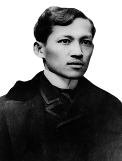
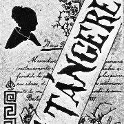
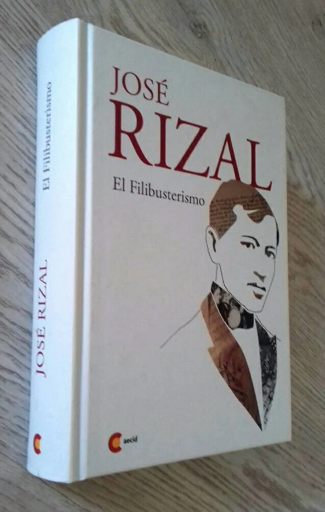
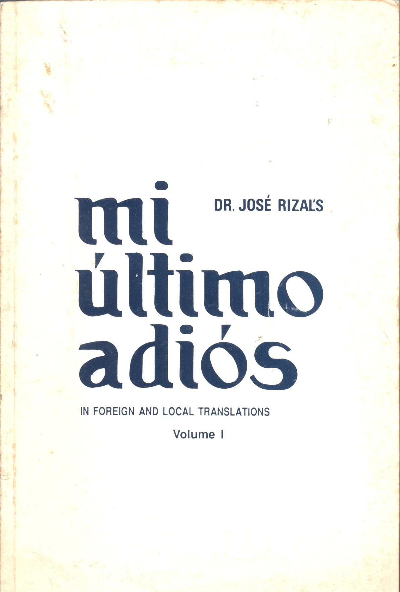
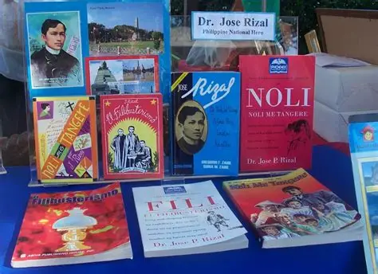

The Philippine National Hero: A Life Dedicated to Freedom, Education, and Reform

José Rizal (June 19, 1861 – December 30, 1896) was a Filipino nationalist, writer, and polymath during the Spanish colonial period. He was a proponent of institutional reforms by peaceful means rather than violent revolution. Rizal is widely considered the greatest national hero of the Philippines.
Trained as a physician and educator, Rizal's works exposed the injustices of Spanish rule and inspired the Philippine Revolution. His execution by firing squad fueled the revolution and cemented his legacy.
The seventh of eleven children in a prosperous family.
Studies philosophy and letters, later medicine.
Studies in Madrid, specializing in ophthalmology.
His first novel criticizing Spanish colonial abuses.
Builds a school, hospital, and farm; continues reforms.
Martyred at age 35, sparking the Philippine Revolution.

A novel depicting the social ills under Spanish rule.

Sequel to Noli, advocating for reform through satire.

His farewell poem written before execution.

Includes poems like "To the Filipino Youth" and essays on education.
Rizal's writings and ideals inspired the Philippine independence movement. He is honored with Rizal Day on December 30 and monuments worldwide. His emphasis on education, equality, and peaceful reform continues to influence global human rights discussions.
"He who does not know how to look back at where he came from will never get to his destination." – José Rizal